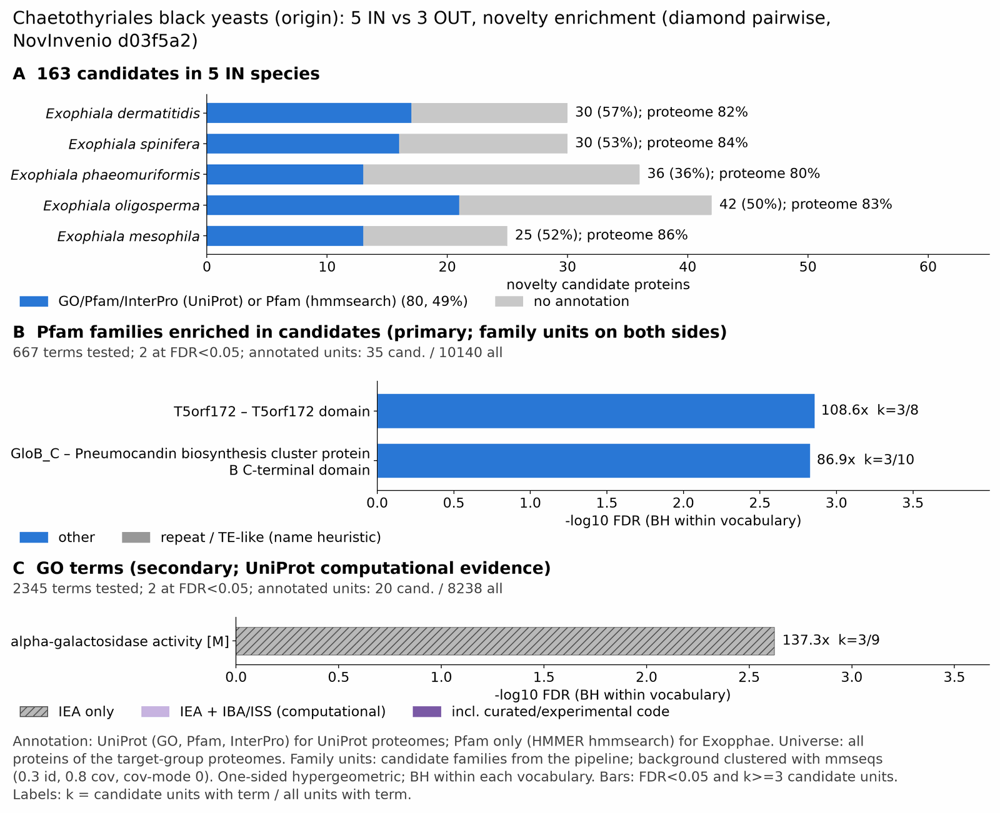

yc chaetothyriales: functional enrichment (novelty)
One-sided hypergeometric test per term; Benjamini-Hochberg FDR within each scope, level and vocabulary. Candidates are the novelty candidates: gene families present in the IN group and absent from the OUT group. Universe: proteome. Background clustered: True (51018 sequences in 15749 clusters, mmseqs easy-cluster --min-seq-id 0.3 -c 0.8). Family level: one unit per candidate family and per background cluster.
Sources: Pfam: 2026-01-27-Pfam38.2; InterPro entries: 110.0; GO: releases/2026-07-26; analysis generated 2026-10-24T14:31:21. Source tables: /bigdata/stajichlab/jstajich/projects/NovInvenio_Investigations/studies/fungi/yeast_convergence/yc_chaetothyriales/analysis/enrichment/outputs/proteome_clustered.
Full record: PROVENANCE. Run report: report.html.
- Annotation provenance is not fully recorded: PROVENANCE.yaml lists the per-species annotation files and their checksums, but not the UniProt release they come from.
- GO results are secondary. GO annotations include computational evidence (IEA, IBA); the GO evidence column shows if a term has non-IEA support.
- Candidate families (pipeline clustering of candidates) and background clusters (mmseqs clustering of the background proteome) are made by different runs, so family-level counts are not fully comparable.
- Low annotation: the candidate set has less than 50% annotation for Pfam 38.6%, InterPro 39.3%, GO 24.5%, any vocabulary 49.1%. Enrichment for these vocabularies has low power.
- GO and InterPro cover only 4 of 5 species: Exopderm, Exopspin, Exopolig, Exopmeso. No GO and InterPro annotation for Exopphae; this species adds no units to the GO and InterPro tests, so those results describe the covered species only.
Summary figure

Annotation coverage
Fraction of proteins with at least one term per vocabulary. Universe = all proteins of the species; candidates = the candidate set.
| Species | Set | Proteins | Pfam | Pfam clan | InterPro | GO | Any |
|---|---|---|---|---|---|---|---|
| Exopderm | universe | 9285 | 77.9% | 63.7% | 82.2% | 69.1% | 82.5% |
| Exopderm | candidates | 30 | 46.7% | 40.0% | 56.7% | 30.0% | 56.7% |
| Exopspin | universe | 12047 | 79.4% | 65.9% | 84.0% | 67.7% | 84.4% |
| Exopspin | candidates | 30 | 36.7% | 36.7% | 50.0% | 36.7% | 53.3% |
| Exopphae | universe | 8788 | 79.6% | 65.2% | 0.0% | 0.0% | 79.6% |
| Exopphae | candidates | 36 | 36.1% | 30.6% | 0.0% | 0.0% | 36.1% |
| Exopolig | universe | 11880 | 78.0% | 65.2% | 82.9% | 67.4% | 83.2% |
| Exopolig | candidates | 42 | 35.7% | 30.9% | 47.6% | 28.6% | 50.0% |
| Exopmeso | universe | 9181 | 81.1% | 66.5% | 85.5% | 71.5% | 85.8% |
| Exopmeso | candidates | 25 | 40.0% | 32.0% | 48.0% | 32.0% | 52.0% |
| ALL_IN | universe | 51181 | 79.1% | 65.3% | 69.3% | 56.9% | 83.2% |
| ALL_IN | candidates | 163 | 38.6% | 33.7% | 39.3% | 24.5% | 49.1% |
Tests summary
Per vocabulary: terms with FDR < 0.05 / terms tested. Protein level counts proteins; family level counts candidate families and background clusters.
| Scope | Level | Cand. units | Pfam sig / tested | Pfam clan sig / tested | InterPro sig / tested | GO sig / tested |
|---|---|---|---|---|---|---|
| whole_set | family | 86 | 2 / 667 | 1 / 287 | 2 / 1228 | 2 / 2345 |
| whole_set | protein | 163 | 7 / 4285 | 4 / 488 | 14 / 3781 | 14 / 4206 |
| Exopderm | family | 29 | 0 / 312 | 0 / 235 | 0 / 763 | 0 / 2060 |
| Exopderm | protein | 30 | 0 / 383 | 0 / 242 | 0 / 949 | 0 / 2212 |
| Exopmeso | family | 22 | 0 / 303 | 0 / 227 | 0 / 729 | 0 / 2048 |
| Exopmeso | protein | 25 | 0 / 384 | 1 / 233 | 1 / 944 | 0 / 2204 |
| Exopolig | family | 40 | 1 / 358 | 0 / 246 | 0 / 858 | 0 / 2107 |
| Exopolig | protein | 42 | 2 / 485 | 0 / 255 | 2 / 1160 | 0 / 2321 |
| Exopphae | family | 32 | 0 / 420 | 1 / 233 | 0 / 0 (not_available_no_annotated_units) | 0 / 0 (not_available_no_annotated_units) |
| Exopphae | protein | 36 | 0 / 498 | 1 / 239 | 0 / 0 (not_available_no_annotated_units) | 0 / 0 (not_available_no_annotated_units) |
| Exopspin | family | 29 | 0 / 370 | 0 / 249 | 0 / 872 | 0 / 2116 |
| Exopspin | protein | 30 | 0 / 501 | 0 / 270 | 0 / 1211 | 0 / 2364 |
Top 25 Pfam terms (whole set, family level)
25 rows shown, ordered by FDR then p-value; 2 have FDR < 0.05 (bold).
| Term | Name | k / N cand. | n / M bg | Fold | FDR (BH) |
|---|---|---|---|---|---|
| PF10544 | T5orf172: T5orf172 domain | 3 / 35 | 8 / 10140 | 108.643 | 0.001 |
| PF28402 | GloB_C: Pneumocandin biosynthesis cluster protein B C-terminal domain | 3 / 35 | 10 / 10140 | 86.914 | 0.001 |
| PF06966 | DUF1295: Protein of unknown function (DUF1295) | 2 / 35 | 8 / 10140 | 72.429 | 0.071 |
| PF12146 | Hydrolase_4: Serine aminopeptidase, S33 | 2 / 35 | 26 / 10140 | 22.286 | 0.595 |
| PF07992 | Pyr_redox_2: Pyridine nucleotide-disulphide oxidoreductase | 2 / 35 | 46 / 10140 | 12.596 | 1.000 |
| PF03358 | FMN_red: NADPH-dependent FMN reductase | 1 / 35 | 5 / 10140 | 57.943 | 1.000 |
| PF12680 | SnoaL_2: SnoaL-like domain | 1 / 35 | 9 / 10140 | 32.19 | 1.000 |
| PF10294 | Methyltransf_16: Lysine methyltransferase | 1 / 35 | 12 / 10140 | 24.143 | 1.000 |
| PF00385 | Chromo: Chromo (CHRromatin Organisation MOdifier) domain | 1 / 35 | 13 / 10140 | 22.286 | 1.000 |
| PF02798 | GST_N: Glutathione S-transferase, N-terminal domain | 1 / 35 | 17 / 10140 | 17.042 | 1.000 |
| PF04828 | GFA: Glutathione-dependent formaldehyde-activating enzyme | 1 / 35 | 21 / 10140 | 13.796 | 1.000 |
| PF00043 | GST_C: Glutathione S-transferase, C-terminal domain | 1 / 35 | 23 / 10140 | 12.596 | 1.000 |
| PF01636 | APH: Phosphotransferase enzyme family | 1 / 35 | 34 / 10140 | 8.521 | 1.000 |
| PF13460 | NAD_binding_10: NAD(P)H-binding | 1 / 35 | 34 / 10140 | 8.521 | 1.000 |
| PF05368 | NmrA: NmrA-like family | 1 / 35 | 36 / 10140 | 8.048 | 1.000 |
| PF12937 | F-box-like: F-box-like | 1 / 35 | 40 / 10140 | 7.243 | 1.000 |
| PF12697 | Abhydrolase_6: Alpha/beta hydrolase family | 1 / 35 | 65 / 10140 | 4.457 | 1.000 |
| PF13561 | adh_short_C2: Enoyl-(Acyl carrier protein) reductase | 1 / 35 | 93 / 10140 | 3.115 | 1.000 |
| PF00106 | adh_short: short chain dehydrogenase | 1 / 35 | 116 / 10140 | 2.498 | 1.000 |
| PF04082 | Fungal_trans: Fungal specific transcription factor domain | 1 / 35 | 530 / 10140 | 0.547 | 1.000 |
| PF00172 | Zn_clus: Fungal Zn(2)-Cys(6) binuclear cluster domain | 1 / 35 | 562 / 10140 | 0.516 | 1.000 |
| PF00004 | AAA: ATPase family associated with various cellular activities (AAA) | 0 / 35 | 49 / 10140 | 0.0 | 1.000 |
| PF00005 | ABC_tran: ABC transporter | 0 / 35 | 29 / 10140 | 0.0 | 1.000 |
| PF00006 | ATP-synt_ab: ATP synthase alpha/beta family, nucleotide-binding domain | 0 / 35 | 5 / 10140 | 0.0 | 1.000 |
| PF00009 | GTP_EFTU: Elongation factor Tu GTP binding domain | 0 / 35 | 20 / 10140 | 0.0 | 1.000 |
Top 25 InterPro terms (whole set, family level)
25 rows shown, ordered by FDR then p-value; 2 have FDR < 0.05 (bold).
| Term | Name | k / N cand. | n / M bg | Fold | FDR (BH) |
|---|---|---|---|---|---|
| IPR053006 | Family:Meiosis-associated regulatory protein | 3 / 38 | 6 / 10675 | 140.461 | 8.86e-04 |
| IPR018306 | Domain:Bacteriophage T5, Orf172 DNA-binding | 3 / 38 | 7 / 10675 | 120.395 | 8.86e-04 |
| IPR010721 | Family:Probable O-methyltransferase UstE-like | 2 / 38 | 7 / 10675 | 80.263 | 0.089 |
| IPR051057 | Family:Phosphoinositide phospholipase C domain-containing protein | 2 / 38 | 8 / 10675 | 70.23 | 0.089 |
| IPR022742 | Domain:Alpha/beta hydrolase domain-containing protein 17C-like | 2 / 38 | 9 / 10675 | 62.427 | 0.089 |
| IPR059857 | Domain:Pneumocandin biosynthesis cluster protein B-like, C-terminal domain | 2 / 38 | 9 / 10675 | 62.427 | 0.089 |
| IPR013785 | Homologous_superfamily:Aldolase-type TIM barrel | 3 / 38 | 80 / 10675 | 10.535 | 0.480 |
| IPR017853 | Homologous_superfamily:Glycoside hydrolase superfamily | 3 / 38 | 86 / 10675 | 9.8 | 0.480 |
| IPR017946 | Homologous_superfamily:PLC-like phosphodiesterase, TIM beta/alpha-barrel domain superfamily | 2 / 38 | 25 / 10675 | 22.474 | 0.480 |
| IPR023753 | Domain:FAD/NAD(P)-binding domain | 2 / 38 | 34 / 10675 | 16.525 | 0.791 |
| IPR005025 | Domain:NADPH-dependent FMN reductase-like domain | 1 / 38 | 5 / 10675 | 56.184 | 1.000 |
| IPR050261 | Family:FrsA/Cutinase/Hydrolase-like | 1 / 38 | 7 / 10675 | 40.132 | 1.000 |
| IPR051606 | Family:Polyketide Oxidoreductase-like | 1 / 38 | 7 / 10675 | 40.132 | 1.000 |
| IPR001810 | Domain:F-box domain | 2 / 38 | 72 / 10675 | 7.803 | 1.000 |
| IPR023779 | Conserved_site:Chromo domain, conserved site | 1 / 38 | 8 / 10675 | 35.115 | 1.000 |
| IPR019410 | Family:Lysine methyltransferase | 1 / 38 | 11 / 10675 | 25.538 | 1.000 |
| IPR029039 | Homologous_superfamily:Flavoprotein-like superfamily | 1 / 38 | 12 / 10675 | 23.41 | 1.000 |
| IPR023780 | Domain:Chromo domain | 1 / 38 | 13 / 10675 | 21.609 | 1.000 |
| IPR051609 | Family:NmrA-type/Isoflavone reductase-like domain-containing protein | 1 / 38 | 16 / 10675 | 17.558 | 1.000 |
| IPR000953 | Domain:Chromo/chromo shadow domain | 1 / 38 | 17 / 10675 | 16.525 | 1.000 |
| IPR012349 | Homologous_superfamily:FMN-binding split barrel | 1 / 38 | 17 / 10675 | 16.525 | 1.000 |
| IPR016197 | Homologous_superfamily:Chromo-like domain superfamily | 1 / 38 | 19 / 10675 | 14.785 | 1.000 |
| IPR004046 | Domain:Glutathione S-transferase, C-terminal | 1 / 38 | 22 / 10675 | 12.769 | 1.000 |
| IPR006913 | Domain:CENP-V/GFA domain | 1 / 38 | 22 / 10675 | 12.769 | 1.000 |
| IPR016040 | Domain:NAD(P)-binding domain | 1 / 38 | 23 / 10675 | 12.214 | 1.000 |
Top 15 GO terms (whole set, family level) — secondary, computational evidence (IEA/IBA) included
15 rows shown, ordered by FDR then p-value; 2 have FDR < 0.05 (bold).
| Term | Name | k / N cand. | n / M bg | Fold | FDR (BH) | GO evidence | Families with non-IEA |
|---|---|---|---|---|---|---|---|
| GO:0004557 | molecular_function:alpha-galactosidase activity | 3 / 20 | 9 / 8238 | 137.3 | 0.002 | IEA_only | 0 |
| GO:0015925 | molecular_function:galactosidase activity | 3 / 20 | 12 / 8238 | 102.975 | 0.003 | IEA_only | 0 |
| GO:0004553 | molecular_function:hydrolase activity, hydrolyzing O-glycosyl compounds | 3 / 20 | 131 / 8238 | 9.433 | 1.000 | IEA_only | 0 |
| GO:0016798 | molecular_function:hydrolase activity, acting on glycosyl bonds | 3 / 20 | 147 / 8238 | 8.406 | 1.000 | IEA_only | 0 |
| GO:0008081 | molecular_function:phosphoric diester hydrolase activity | 2 / 20 | 50 / 8238 | 16.476 | 1.000 | IEA_only | 0 |
| GO:0070887 | biological_process:cellular response to chemical stimulus | 2 / 20 | 86 / 8238 | 9.579 | 1.000 | IEA_only | 0 |
| GO:0016787 | molecular_function:hydrolase activity | 7 / 20 | 1247 / 8238 | 2.312 | 1.000 | IEA_only | 0 |
| GO:0003824 | molecular_function:catalytic activity | 14 / 20 | 3735 / 8238 | 1.544 | 1.000 | IEA_only | 0 |
| GO:0042221 | biological_process:response to chemical | 2 / 20 | 117 / 8238 | 7.041 | 1.000 | IEA_only | 0 |
| GO:0004197 | molecular_function:cysteine-type endopeptidase activity | 1 / 20 | 16 / 8238 | 25.744 | 1.000 | IEA_only | 0 |
| GO:0004806 | molecular_function:triacylglycerol lipase activity | 1 / 20 | 17 / 8238 | 24.229 | 1.000 | IEA_only | 0 |
| GO:0016646 | molecular_function:oxidoreductase activity, acting on the CH-NH group of donors, NAD or NADP as acceptor | 1 / 20 | 19 / 8238 | 21.679 | 1.000 | IEA_only | 0 |
| GO:0016655 | molecular_function:oxidoreductase activity, acting on NAD(P)H, quinone or similar compound as acceptor | 1 / 20 | 23 / 8238 | 17.909 | 1.000 | IEA_only | 0 |
| GO:0016788 | molecular_function:hydrolase activity, acting on ester bonds | 3 / 20 | 393 / 8238 | 3.144 | 1.000 | IEA_only | 0 |
| GO:0006629 | biological_process:lipid metabolic process | 3 / 20 | 394 / 8238 | 3.136 | 1.000 | IEA_only | 0 |
Actin cytoskeleton controls
Known actin-related families and how many of their proteins pass each filter. Protein ID columns are left out.
| control | pfam_ids | desc_regex | IN_universe | IN_in_matrix | IN_pass_ingroup_rule | candidates | near_miss_out1 | near_miss_out2 | n_Exopderm | n_Exopspin | n_Exopphae | n_Exopolig | n_Exopmeso | n_Caprcoro | n_Cladcarr | n_Fonspedr |
|---|---|---|---|---|---|---|---|---|---|---|---|---|---|---|---|---|
| Arp2/3 ARPC2 (P34-Arc) | PF04045 | 5 | 5 | 5 | 0 | 0 | 0 | 1 | 1 | 1 | 1 | 1 | 1 | 1 | 1 | |
| Arp2/3 ARPC3 (P21-Arc) | PF04062 | 5 | 5 | 5 | 0 | 0 | 0 | 1 | 1 | 1 | 1 | 1 | 1 | 1 | 1 | |
| Arp2/3 ARPC4 | PF05856 | 5 | 5 | 5 | 0 | 0 | 0 | 1 | 1 | 1 | 1 | 1 | 1 | 1 | 1 | |
| Arp2/3 ARPC5 (P16-Arc) | PF04699 | 5 | 5 | 5 | 0 | 0 | 0 | 1 | 1 | 1 | 1 | 1 | 1 | 1 | 1 | |
| Arp2/3 ARPC1 (description only) | arp2/3 complex.*(41|p41|subunit 1)|ARPC1 | 0 | 0 | 0 | 0 | 0 | 0 | 0 | 0 | 0 | 0 | 0 | 0 | 0 | 0 | |
| Arp2 / Arp3 (description only) | actin-related protein (2|3)\b|\bARP[23]\b | 24 | 24 | 24 | 0 | 0 | 0 | 4 | 7 | 0 | 7 | 6 | 6 | 7 | 6 | |
| WAVE complex NCKAP1 | PF09735 | 0 | 0 | 0 | 0 | 0 | 0 | 0 | 0 | 0 | 0 | 0 | 0 | 0 | 0 | |
| WAVE complex CYFIP (FragX_IP) | PF05994 | 0 | 0 | 0 | 0 | 0 | 0 | 0 | 0 | 0 | 0 | 0 | 0 | 0 | 0 | |
| WAVE complex ABI | PF07815|PF27594 | 0 | 0 | 0 | 0 | 0 | 0 | 0 | 0 | 0 | 0 | 0 | 0 | 0 | 0 | |
| SCAR/WAVE (SCAR_helical) | PF27569 | 0 | 0 | 0 | 0 | 0 | 0 | 0 | 0 | 0 | 0 | 0 | 0 | 0 | 0 | |
| WASP family (WH1) | PF00568 | 5 | 5 | 5 | 0 | 0 | 0 | 1 | 1 | 1 | 1 | 1 | 1 | 1 | 1 | |
| WH2 motif (WASP, WAVE, others) | PF02205 | 10 | 10 | 10 | 0 | 0 | 0 | 2 | 2 | 2 | 2 | 2 | 2 | 2 | 2 | |
| Formin FH2 | PF02181 | 5 | 5 | 5 | 0 | 0 | 0 | 1 | 1 | 1 | 1 | 1 | 1 | 1 | 1 | |
| Formin Drf_GBD / Drf_FH3 / Drf_DAD | PF06371|PF06367|PF06345 | 7 | 7 | 7 | 0 | 0 | 0 | 1 | 2 | 1 | 2 | 1 | 1 | 1 | 1 | |
| Ena/VASP (VASP_tetra) | PF08776 | 0 | 0 | 0 | 0 | 0 | 0 | 0 | 0 | 0 | 0 | 0 | 0 | 0 | 0 | |
| Coronin (description only) | coronin | 4 | 4 | 4 | 0 | 0 | 0 | 1 | 1 | 0 | 1 | 1 | 1 | 1 | 1 | |
| Cortactin (HS1_rep) | PF02218 | 0 | 0 | 0 | 0 | 0 | 0 | 0 | 0 | 0 | 0 | 0 | 0 | 0 | 0 | |
| Myosin 2 tail (Myosin_tail_1) | PF01576 | 0 | 0 | 0 | 0 | 0 | 0 | 0 | 0 | 0 | 0 | 0 | 0 | 0 | 0 | |
| Myosin head (all myosins) | PF00063 | 20 | 20 | 20 | 0 | 0 | 0 | 4 | 4 | 4 | 4 | 4 | 4 | 4 | 4 |
Page written by bin/generate_enrichment_page.py.